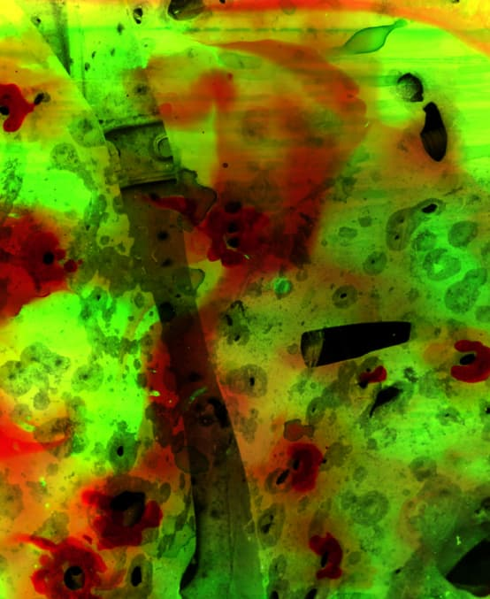
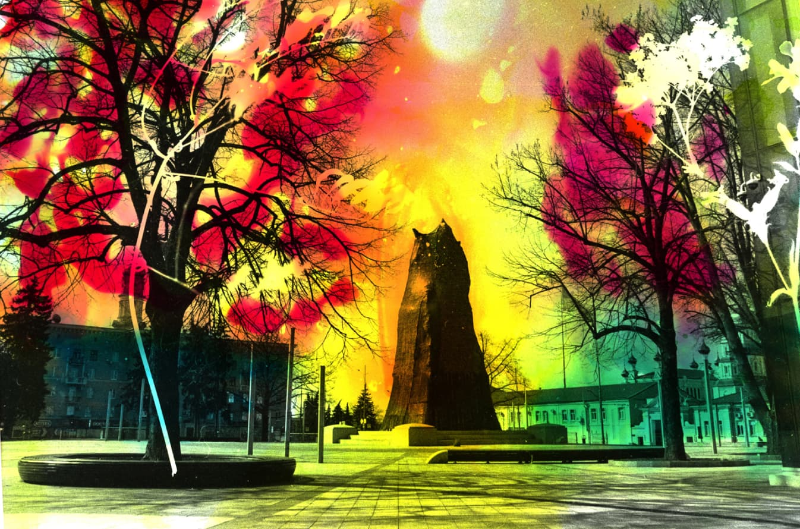
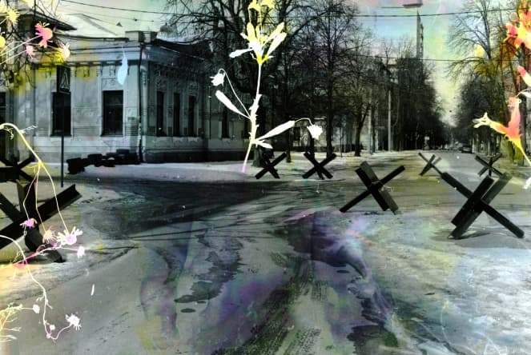
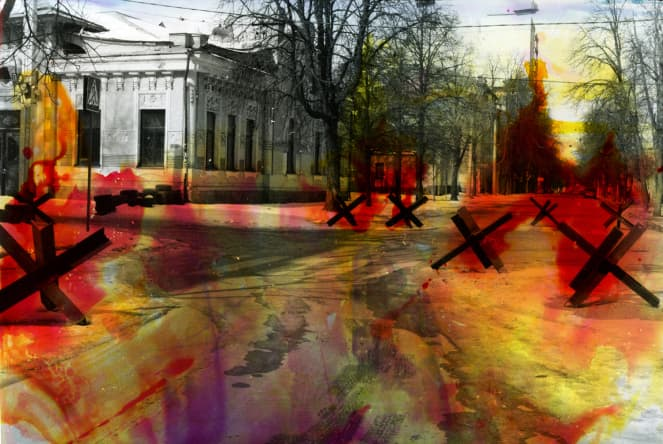
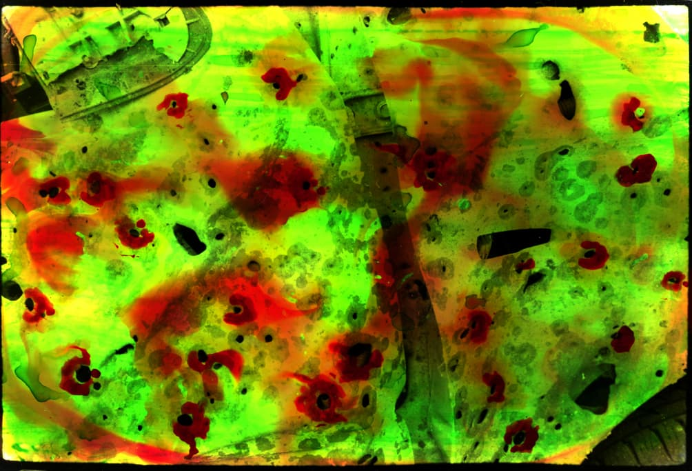

Flowers
of Death
2022 - ongoing project
Andy Warhol once said, “When you see horrible pictures over and over again, they stop affecting you..” War produces the same effect. The only difference is that people, who live inside it, cease freaking out and continue dreaming of the upcoming restoration of their life, but those who watched it from aside, showing the initial interest, merely get tired of sympathizing over time. Regardless of the reaction of society, whether people are tired or not, the pain of those inside the situation does not disappear. This series is about death and destruction, but also about distancing from danger and the ability to find the strength to live on. The bright colors and beautiful flowers are just a disguise for the real content of the photos, but also a promise that everything will still be good and a new spring will come.

-

-


-

Project in progress